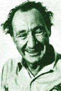

(Halikarnas Balıkçısı)
(1890 – 1973)

Bir yandan yazdığı birbirinden güzel romanlarla deniz insanlarının doğayla savaşını destanlaştıran, bir yandan da Anadolu'nun antik tarihi üzerine yazdığı denemeleriyle bize yurdumuzun tarihsel değerlerini anlatan Halikarnas Balıkçısı, hâlâ hak ettiği biçimde tanınıp okunmayı bekleyen yazarlarımızdan biridir.
Asıl adı Cevat Şakir Kabaağaçlı olan ve özellikle Bodrum'a olan aşkı ile tanınan "Halikarnas Balıkçısı" takma adlı ünlü roman ve öykü yazarımız, tarihçi, yazar ve vezir olan babası Mehmet Şakir Paşa'nın yüksek komiserliği sırasında 1890 yılında Girit'te dünyaya geldi. Doğum yeri ve tarihi konusunda farklı kaynaklar farklı bilgiler vermektedir. Annesi İsmet Hanım'dır. Cevat Şakir baba tarafından "Şakirpaşa Ailesi" olarak tanınan köklü bir Osmanlı ailesine mensup olup amcası II. Abdülhamit'in sadrazamlarından Ahmet Cevat Paşa'dır. Şakirpaşa Ailesi sonraları aralarında ressam Fahrünnisa Zeyd, ressam Nejat Devrim, ressam Aliye Berger, seramik sanatçısı Füreya Koral ve tiyatro oyuncusu Şirin Devrim'in de bulunduğu birçok sanatçı yetiştirmiştir.
Çocukluğu babasının elçilik yaptığı Atina'da geçti. 1904'te Robert Kolej'i bitirdi ve yükseköğrenimini 1908'de İngiltere'de, Oxford Üniversitesi Yeni Çağlar Tarihi Bölümü'nde tamamladı. 1913'te evlendiği İtalyan eşi Aniesi ile bir süre İtalya'da yaşadı. Bu sırada resim dersleri aldı, İtalyanca ve Latince öğrendi. 1914'te babası Mehmet Şakir Paşa yaşanan büyük bir kavga sonucu Cevat Şakir'in tabancasından çıkan bir kurşunla Afyon'da ölünce Cevat Şakir on dört yıl hapis cezasına çarptırıldı. Cezasının yedi yılını çektikten sonra, yakalandığı verem hastalığından ötürü affedilip tahliye edildi.
Halikarnas Balıkçısı 1910-1925 yılları arasında Resimli Ay ve İnci gibi dergilere yazılar yazdı; kapak resimleri, süslemeler, karikatürler çizdi. Zekeriya Sertel'in çıkardığı Resimli Hafta dergisinde Hüseyin Kenan takma adıyla yazdığı Hapishanede İdama Mahkum Olanlar Bile Bile Asılmaya Nasıl Giderler? adlı öykü yüzünden Ankara İstiklal Mahkemesi'nde yargılandı ve Bodrum'da üç yıl sürgün cezasına çarptırıldı (1925). Bir buçuk yıl sonra cezası affa uğrayınca bir daha İstanbul'a dönmedi ve çok sevdiği Bodrum'da kaldı.
1926'dan sonra deniz hikâyeleriyle tanındı. Konularını Ege ve Akdeniz Bölgeleri'nde geçen denizle ilgili olaylardan aldı. İçinde yaşadığı ve en küçük ayrıntısına kadar bildiği "özgür ve asi" denizle, kaderleri deniz tarafından belirlenen balıkçı, dalgıç, sünger avcısı ve gemilerin hikayesini zengin bir kelime dağarcığı ve mitoloji hazinesinden yararlanarak, denize karşı duyduğu hayranlıktan kaynaklanan şiirsel ve akıcı bir üslubla hikâye ve romanlarına aktardı.
Yazı ve düşünceleriyle Azra Erhat gibi döneminin önemli aydınlarını etkilemiş olan Halikarnas Balıkçısı çeşitli dillerden yüze yakın kitap çevirmiştir. Eserlerinin yeni baskıları hâlâ yapılagelen Halikarnas Balıkçısı'na, Kültür Bakanlığı tarafından 1971 yılında Devlet Kültür Armağanı verilmiştir.
Bodrum'un antik çağdaki adı olan Halikarnassus'u takma ad olarak benimseyen Cevat Şakir, Bodrum'da balıkçılık dahil çeşitli işlerle uğraştı. Eserlerinin büyük kısmını da Bodrum'da yazdı. İkinci evliliğini dayısının kızı Hamdiye, üçüncü evliliğini Hatice Hanım'la yapan Cevat Şakir'in üç evliliğinden beş çocuğu oldu. Çocukları ortaöğrenim çağına gelince, o yıllarda Bodrum'da ortaokul bulunmaması nedeniyle ailesini İzmir'e nakletti. Yaşamını yazarlık ve turist rehberliğiyle sürdürdü, rehberlik kurslarında da ders verdi. 13 Ekim 1973'te İzmir'de kemik kanserinden vefat etti. Vasiyeti üzerine Bodrum'a gömüldü. Kabri Bodrum – Gümbet'teki Türbe Tepesi'nde manevi oğlu Şadan Gökovalı ile seçtiği yerde, Halikarnas Balıkçısı Müzesi adı altında bulunmaktadır. Bodrum bugün sahip olduğu ününü Halikarnas Balıkçısı'na da borçludur.
Romanları: Aganta Burina Burinata (1945), Ötelerin Çocuğu (1956), Uluç Reis (1962), Turgut Reis (1966), Deniz Gurbetçileri (1969)